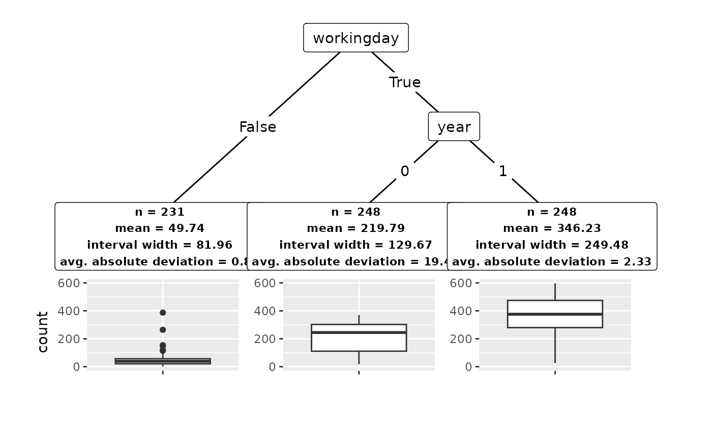

conftree
conftree.Rmd
library("conftree")
set.seed(123)Regression
Data: bike sharing usage in Washington, D.C.
data(bikes, package = "conftree")Select learner
library("tidymodels")
forest <- rand_forest() %>%
set_mode("regression") %>%
set_engine("ranger")Detect subgroups
groups <- r2p(
data = bikes,
target = "count",
learner = forest,
cv_folds = 1,
alpha = 0.1,
gamma = 0.01,
lambda = 0.5,
max_groups = 3
)Understand results
groups
#> Conformal tree with 3 subgroups:
#> [1] root
#> | [2] workingday in False: *
#> | [3] workingday in True
#> | | [4] year in 0: *
#> | | [5] year in 1: *
#> ---
#> * terminal nodes (subgroups)
summary(groups)
#> Conformal tree with 3 subgroups:
#> n mean width deviation
#> 1 231 49.74 81.96 0.89
#> 2 248 219.79 129.67 19.44
#> 3 248 346.23 249.48 2.33
#> ---
#> Alpha: 0.1 Lambda: 0.5 Gamma: 0.01
plot(groups)